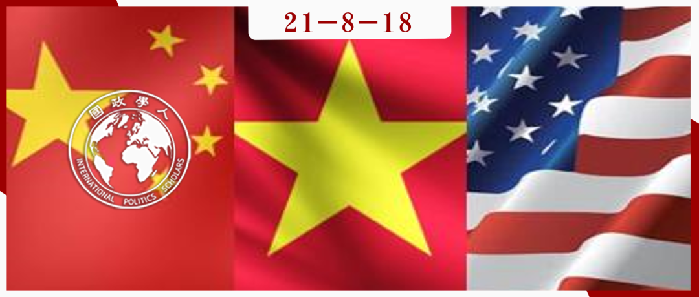

收录于合集 #政策研究 1个

作品简介
作者 ： Derek Grossman，兰德公司的高级国防分析师、南加州大学的兼职教授和《外交家》（ the Diplomat ）的定期撰稿人。他曾为美国国防部负责亚太安全事务的助理国防部长提供每日情报简报。Paul S. Orner，美国南加州大学政治学与国际关系系博士研究生，兰德公司兼职研究员。他目前还是乔治华盛顿大学安全与冲突研究所的准博士研究员。
编译： 石稚瑄（国政学人编译员，国际关系学院国际政治系）
来源： Derek Grossman & Paul S. Orner. Tracking Chinese Perceptions of Vietnam’s Relations with China and the United States, Asia Policy , Vol. 16(2), 2021, pp.103-127. https://www.nbr.org/wp- content/uploads/pdfs/publications/ap16-2_grossman_orner_apr2021.pdf
归档： 《国际关系前沿》2021年第8期，总第35期。

内容提要 ****
本文分析了中国对美越关系及美越安全合作的评估趋势，以识别中美越三个国家之间的 安全动态模式 。世纪之交以来，中国外交政策专家一致认为，虽然中越关系中总存在某些紧张局势，但经济和地缘政治现实阻止了越南在任何重要程度上以结盟形式对抗中国或与美国合作。2009年中国对南中国海的大部分地区提出了九段线主张，2014年5月中越开始一系列在争议水域的对峙，一些中国专家由此质疑中越关系的持久性，但 中国的普遍评估是越南不会为了在与中国的对抗中占上风而与美国密切合作。
**文 章导读 **
01
2005年至2009年：越南留在原地
合作前景
**
**
中国分析人士认为，中越之间的领土争端虽然令人担忧，但可以通过双边谈判和平解决。 2005年，两国的联合声明指出，双边对话已取得重大进展，最迟将于2008年完成陆地边界全线勘界立碑工作。2008年底，两国正式发表联合声明以纪念划界成功。2010年，两国在天保边境举行仪式，庆祝两国陆界勘察议定书、陆界管理制度协定、边境口岸和管理制度协定生效。
中国专家进一步希望利用这些富有成效的双边交流解决南海争端。 他们提议，中越可以合作管理和巡逻北部湾的渔业。中国社会科学院2006年关于越南的报告指出，双方都希望将缓解北部湾紧张局势的机构更广泛地扩展到南中国海。似乎即使是石油钻探等潜在争议问题也可能在友好的多边环境中得到解决——2005年中国、菲律宾和越南同意共同开发南海资源。2007年中越达成了共同在北部湾巡逻的协议。
直到21世纪的第一个十年末，中国分析人士仍然乐观地认为，中越在南海面临的挑战可能会得到和平解决。事实上，会谈最终取得成果，2010年中越在北部湾联合巡逻并进行搜救演习。解决陆地边界划分和北部湾管辖权的早期成功确实为继续解决争端奠定了积极的基调。
与美国合作：经济而非地缘政治考量
**
**
中国分析人士不仅认为中越关系正在改善，而且认为美越关系的改善不会威胁到中国的利益。 虽然越南在革新开放中接触了包括美国在内的许多域外大国，但其行为的驱动因素是经济利益而非地缘政治。 中国分析人士指出，越南寻求向外国市场开放并获得进入世贸组织等国际组织的机会。2001年美越签署贸易协定后，双边贸易持续增长。2005年，自越战结束以来越南领导人首次访美。2006年，美国总统布什给予越南最惠国待遇。与此同时，越南与中国的贸易也在增长。
中国分析人士指出，越南与美国之间的安全合作水平有限。 例如，越南官员访美，双方讨论在反恐、贩毒、洗钱、跨国犯罪、贩卖人口等非传统安全问题上的合作。越南精英同意参加在美国举行的战略对话，以在执法和安全方面进行合作。2008年，美国首次邀请越南进行联合海军演习。尽管如此，中国分析人士认为没有理由相信美越安全关系正在显著改善。越南不太可能放弃其“三不”国防政策—— 不参加任何军事集团或与任何国家结成军事联盟、不准任何外国在越南设立军事基地、不依靠一个国家反对另一个国家。 他们认为，越南正在努力改善与所有主要大国的关系，不会采取任何可能危及其外交和经济魅力攻势的行动。
此外，中国分析人士注意到深层次的意识形态问题继续困扰着昔日敌人之间的双边关系。 2004年，美国国会通过了《越南人权法》，冻结了对越南的非人道主义援助，以回应越南对山地少数民族（主要是基督徒）的虐待。随后，美国国务院将越南列为宗教自由“特别受关注的国家”。布什政府在2006年访问河内之前取消了这一指定，但2009年美国国务院的报告《宗教自由》再次批评越南侵犯信仰自由。越南最担忧的是美国试图对其实行“和平演变”：西方民主和人权价值观的输入破坏了越共的稳定执政。对中国分析人士而言，美国在21世纪头十年拉拢越南的努力因美国希望按照自己的形象重塑越南而受阻。
越南外交政策的多样化组合
**
**
这一时期中国分析人士没有观察到越南有任何准备与中国进行军事竞争的企图。 相反，越南一直在大幅缩减其武装部队的规模，将其缩减至以往规模的三分之一。此外，越南从柬埔寨撤军的决定进一步表明其希望修复与中国和东南亚邻国的关系。
越南不再重视军事现代化，同时也试图迅速融入国际机制，这表明越南已经放弃了其在冷战期间采取的“一边倒”的战略。 中国分析人士认为越南精英从偏向苏联而非中国的经历中吸取了教训，并意识到最好的政策是简单地与所有国家保持友好关系。越南于1995年加入东盟，1997年加入亚太经合组织，2007年加入世贸组织。从中国的角度看，越南会警惕玩地缘政治的“危险游戏”，因为这样做可能会破坏其在国外的经济活动。
在此期间，越南没有承诺与任何大国建立牢固的伙伴关系，而是努力成为“世界各国的朋友”。 为了推动经济增长，越南需要与许多昔日的对手和解，开放市场，并为外国投资者创造一个诱人的环境。在这种战略演算中，越南没有卷入大国竞争的余地。
02
2009年至2013年：中国拿与越南的关系冒险
领土争端：没那么简单
**
**
最初，中国精英希望就较小的岛屿进行双边对话，以此作为解决更大的海上领土争端的桥梁。然而，出乎意料的是， 领土争端争议性不断增加，并开始向多边和国际机构蔓延 。
2012年的南海事态发展令人担忧。4月，越南派6名僧人前往南沙群岛修庙，并担任方丈。6月，越南派出两架苏-27战斗机巡逻南沙群岛。同月，越南通过了一项法案，规定西沙群岛和南沙群岛是其领土的一部分。当越南领导人观察到中国巩固对黄岩岛的控制，从而削弱菲律宾对该地区的主张时，他们决定越南应该在自己占领的地物周围加强并表明其存在。这些举动发生的同时，中国在南海问题上的学术话语和公众舆论也发生了转变。尽管中国分析人士此前认为大多数国家不愿挑战中国的立场，但越来越明显的是，在此问题上东南亚国家不愿默许中国的主张。
2012年6月，中国海洋石油总公司宣布，在与越南的主权声索重叠的南海争议海域有9个石油区块开放投标。2012年7月，越南和菲律宾在东盟外长会议上提出了这个问题，中越领土争端不再仅限于双边领域。
中国分析人士指出，对于中国的不满情绪不仅存在于越南精英群体中，五次大规模抗议活动表明反华情绪的普遍存在。事实上，中国社会科学院2013年的报告将南海的主权争端描述为以美日为首的大国在东南亚进行的权力游戏。
提升军事实力
**
**
尽管在上世纪90年代和本世纪初越南军事能力大幅下降，中国分析人士指出，在2000年代后期和2010年代早期，越南武装部队仍在采购越来越现代化的军事装备，尤其是飞机、航海舰船以及其他平台和武器系统，以增加在南海的力量投射能力。中国开始担心越南正在专注于扩大其海上能力，采购水面战舰、潜艇、无人机和巡逻艇，以对抗中国的军事能力，并为小规模冲突做准备。2014年中国社会科学院报告特别指出，这些活动旨在为“该地区的低强度冲突”做好准备，从长远来看越南希望建立在其沿海地区以外更远地区采取行动的能力。
最重要的是，中国分析人士并不认为这种转变仅仅是越南军队现代化的尝试。 相反，他们认为这些采购是越南军事战略向更积极的防御导向政策的根本转变 ：“这一系列先进武器装备的采购将使越南军队特别是海空军实现由弱到强的跨越，体现了越南区域防御战略从被动防御逐步转向主动防御的趋势。“分析人士指出，具体的军事采购暗示越南有意与中国在南海的行动抗衡。
目前，中国分析人士认为越南可以冒险采取低强度行动来维护其海上利益，即使它无法在实际上制衡中国。中越关系既合作又竞争，但美越关系也是如此。尽管美国加强了与越南的安全合作，但美国和越南政治文化的根本矛盾仍然限制了这种合作。2010年美国国务卿希拉里访问越南后，中国分析人士指出：美国在民主改革和侵犯人权问题上持续施压的态度，以及越南战争遗留下来的各种问题，阻止了越南在中越紧张局势升级的情况下明显转向美国。
03
2014年至2021年：越南在南海与中国对峙
越南的决心变得明显
**
**
2014年5月，中国海洋石油总公司将其“海洋石油981”钻井平台派往越南声称拥有主权的大陆架上作业。越南观察家将此视为中国又一次的挑衅行动。 虽然中国精英们已经预料到越南会进行一些反击，但全国各地的暴力反华抗议活动可能超出了他们的预期。 此前，中方曾煽动民族主义情绪以表达对越南的不满。但这次，中国企业在越南遭到破坏、抢劫和焚烧，3000多名中国公民被疏散，其中16人受伤，2人死亡。
暴力反华抗议活动对中国分析人士来说意义非凡，因为越南作为一个威权国家，拥有许多与中国相同的政府机构和维护公共秩序的机制。事实上，中国分析人士经常将越南视为中国的一个较小的、延迟的版本——一个前（并且仍然是正式的）共产主义国家，在保持严格的一党统治的同时进行经济改革。 越南共产党愿意在破坏社会稳定的民族主义抗议活动中“骑虎难下”，这震惊了那些认为越南不愿危及与中国的经济关系的中国人。 在抗议活动之后，中国不能在南海领土问题上对越南随意地施压。
合作从经济扩展到安全
**
**
在2014年危机之后，中国分析人士仍然认为，即使中越紧张局势被低估了，美越安全关系也有一个明确的上限。与此前对双边机制的乐观相比，他们现在认为越南确实会对中国在南海的主权声索提出争议，联合开发资源不足以缓解主权争端。与此前中国分析人士关注越南裁军相比，中国社会科学院的研究人员指出越南正在为其海上部队生产现代化的快艇和渔业监视船，其海上能力在美国2016年部分解除了对越南出售武器的禁令后进一步加强。越南收购武器让中国分析人士认为其海岸警卫队是东南亚国家中最强大的。虽然美国进入金兰湾海军基地仍然不现实，但分析人士确实注意到美越军事关系稳步加强。2017年10月，美国两艘航空母舰停靠金兰湾国际港口，标志着两国海军合作达到新高度。中国分析人士认为，日本和越南在东海和南海问题上相互合作的背后不乏美国的影响。
也许比中国分析人士对美越安全关系的评估更能说明问题的是他们对中越安全关系的评估或缺乏评估。虽然以前中国社会科学院关于越南的年度报告中包含这样的评估，并且通常有一章专门讨论中越关系的发展，但2018年关于越南军事发展的章节侧重于越南武装部队采购的平台和技术。在某种程度上，这种对越南行动的评估是在中国分析人士称之为特朗普政府“破坏性”印太战略的背景下制定的。中国南海研究所的观察员指出，印太战略“不是传统意义上的安全战略”，因为它试图将经济、国内政治和安全联系起来。这意味着中国专家认为美国战略家目睹中国在印太地区扩大经济影响力后，终于意识到美中竞争不能局限于传统的军事领域。尽管如此，这些专家认为，美国这一新战略在很大程度上与以前的政策相似，特别是侧重于该地区的传统盟友，如日本和澳大利亚，并使用联合军事演习来表示决心，包括邀请英国、法国和东盟国家加入在南海的活动。
到目前为止，中国分析人士更愿意接受越南将继续平衡其与美国和中国的关系这一事实。他们认识到，南中国海领土争端的性质将迫使越南与地区伙伴和美国接触。这些联系将扩展到经济领域和安全领域。尽管如此，中国分析人士认为，越南的基本地缘政治局势没有改变，越南的外交政策仍将经济增长放在首位。 即使美国退出跨太平洋伙伴关系协定，越南及其合作伙伴仍将在没有美国的情况下继续发展经济关系；重点批准该协议的替代品——全面与进步跨太平洋伙伴关系协议；进一步整合与东盟成员国的贸易和金融。
04
结论和政策影响
中国没有准备好应对越南未来对冲的重大和突然转变。中国精英可能认为美越关系的可预测性有利于其政府的外交政策和军事战略。因此， 越南与美国的安全合作的任何重大变化都会让中国感到惊讶和不安。
虽然越南不太可能直接反对中国，但也不太可能在安全问题上与中国合作。 这种动态似乎是不可逆转的，除非中国全面修改其在南海的安全政策，包括承认和尊重越南的专属经济区和领土主张。
中国不太可能因美越加强合作而破坏地区和平与稳定。因此，像过去讨论的那样， 将美越伙伴关系从越南语中的“综合性”提升为“战略性”，不太可能引起中国的太大反应 。
译者评述
随着中美竞争的加剧，中小国家的战略选择受到越来越多的关注。近年来，美越关系发展迅速。本文以中国社会科学院发布的年度报告和越南蓝皮书为研究材料，追踪中国对中越关系和美越关系看法的逐年变化。作者发现，2005年至2009年期间，中国认为中越领土争端可以通过双边谈判解决，越美关系改善的驱动因素是经济利益，越南无意“遏制”中国。因此中国对中越关系持乐观态度。2009年至2013年期间，中越领土争端尖锐化和越南增强军事力量让中国专家重新思考中越关系，但仍认为越南不会转向美国。2014年至2021年期间，石油钻井平台危机和随后爆发的反华活动是中越关系的转折点，越南加强与各国的安全合作，但中国分析人士认为经济现实与中越实力差距将阻止越南直接对抗中国。根据上述分析，作者得出结论，认为越南与美国的安全合作的任何重大变化都会让中国感到惊讶和不安，越南不太可能在安全问题上与中国合作，中国不太可能因美越安全合作更密切而破坏地区和平与稳定。
本文是美国研究人员眼中的“中国对中越关系与美越关系的看法”，这在一定程度上也反映了美国对中国的认知，而这种认知势必影响到美国的对华政策行为。本文有助于中国判断美国的对华认知与行为，减少错误知觉以及由此造成的冲突。此外，随着美国对越南重视程度的提升（从拜登政府访问越南的行程中可以看出：2021年7月美国防长奥斯汀访问越南，8月美国副总统哈里斯访问越南）， 研究中美越三国的安全动态模式可以理解相关国家对华行为背后的逻辑，预判其战略选择，有利于中国弱化针对自己的同盟或联合，减轻安全压力。这无疑极具现实意义 。
词汇整理
hedging 对冲
South China Sea 南海
the Indo-Pacific strategy 印太战略
the Trans-Pacific Partnership Agreement 跨太平洋伙伴关系协定
the Comprehensive and Progressive Agreement for Trans-Pacific Partnership 全面与进步跨太平洋伙伴关系协定
责编 | 朱忻博 朱家羲 丁伟航
排版 | 韩心蕊 陈炜昊
文章观点不代表本平台观点，本平台评译分享的文章均出于专业学习之用, 不以任何盈利为目的，内容主要呈现对原文的介绍，原文内容请通过各高校购买的数据库自行下载。
好好学习，天天“在看”
国政学人
支持学术公益与知识传播
微信扫一扫赞赏作者 __赞赏
已喜欢，对作者说句悄悄话
取消 __
发送给作者
发送
最多40字，当前共字
上一页 1/3 下一页
长按二维码向我转账
支持学术公益与知识传播
受苹果公司新规定影响，微信 iOS 版的赞赏功能被关闭，可通过二维码转账支持公众号。